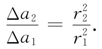
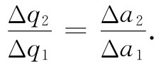
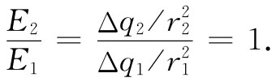

图5-9 在带电球壳内的任一点P处，场都等于零
如果对球壳内的场为何 会等于零这一点更详细地查看一下，我们就能更加清楚地看出，高斯定律之所以成立只是由于库仑力精确地依赖于距离的平方。考虑一个均匀带电球壳里面的任一点P，想象出一个以P为顶点的小锥形伸展至球壳表面，在那里它割出一个小面积Δa1 ，如图5-9所示。一个从P的相对一边发散出去的完全对称锥形，将会从球面割出一个面积Δa2 。如果从P至这两个小面积元的距离分别为r1 和r2 ，那么它们的面积比为

对于在球面内的任一点P，可以用几何学来证明这一点。
如果球面是均匀带电的，则在每一面积元上的电荷Δq就正比于各面积，因而

于是库仑定律讲，由这两面积元在P点上所产生的场其大小之比为

这两个场恰好互相抵消。由于面上所有各部分都可按此办法配成对，因此，在P点的总场就应等于零。但你还可以看出，假如在库仑定律中r的幂数不精确等于2，那就不会这样了。
高斯定律的正确性取决于平方反比的库仑定律。若该力的定律不精确是平方反比，则在一个均匀带电球面内部的场严格为零这一说法就不正确了。例如，要是力变化得更快一些，比如与r的立方成反比，那么较接近于球内某一点的那部分面积产生的场将比较远部分面积所产生的场更大，对于正的面电荷结果会形成一个径向的、指向内的场。这些结论提示了一个检验平方反比定律是否完全正确的优越办法，我们只需确定在一个均匀带电球壳里的场是否精确为零。
很幸运存在这样一种方法。通常要高精度测量一个物理量是很困难的——要求精度达百分之一可能不太困难，但比如要测量库仑定律达到十亿分之一的精度，那该怎么着手呢？用目前所能达到的最优良技术测量两带电物体间的库仑力 ，要达到这样的精度几乎肯定是不可能的。但是只要确定在一个带电球面内部的电场小于 某个数值，我们就能对高斯定律的正确性做出一个高精度的测量，因而这也是对库仑定律平方反比关系的高精度测量。实际上，人们所做的就是将具体力的定律与一标准的平方反比定律做比较 。相等或几乎相等的事件的这种比较，往往是最精密的物理测量的基础。
我们将怎样来观察一个带电球面内的场呢？一种方法是，拿一物体与一球形导体的内部接触而试图使之带电。你知道，如果使一个小金属球接触到一个带电物体，然后将它同一静电计接触，则静电计就会带电，其指针将离开零点，如图5-10（a）所示。小球采得一些电荷是由于在该带电球壳外面存在电场，而这电场又会驱使电荷跑至（或跑出）小球。你如果将小球接触该带电球壳内部 来做这同样的实验，则发现并没有什么电荷会被带至静电计上。用这样一个实验，你就可容易地证明：在内部的场至多是外场的百分之几，因而高斯定律至少是近似正确的。
图5-10 在一个闭合的导体壳内电场为零
似乎是富兰克林最早注意到导体壳内的场为零的。这一结果似乎令他奇怪。当他把观察结果报告给普里斯特利时，后者提出可能与平方反比定律有关，因为当时已知道一个物质球壳在其内部不产生引力场。但一直到了18年后，库仑才测量出那个平方反比关系，而高斯定律的出现就更晚了。
高斯定律曾被仔细地加以检查，即把一静电计放在一个大球壳中，观察当用高压使球壳带电时静电计是否会发生偏转，但结果总是否定的。知道了仪器的几何尺寸以及静电计的灵敏度，便有可能算出被观察到的最小的场。从这个数值就可以对幂指数与2的歧离设置一个上限。如果把静电力写成与r-2+∈ 有关，则我们便能把上限放在∈上。通过这个办法，麦克斯韦曾测定了∈小于1/10000。这个实验于1936年由普林顿和劳顿两人重新做过并加以改进。他们发现库仑幂数与2的差小于十亿分之一。
现在，由此可提出一个有趣问题：在各种不同情况下，我们是否知道这库仑定律有多准确呢？刚才所描述的实验测量了在几十厘米的距离上场与距离的关系，但对于原子内部的距离——比如在氢原子中，我们相信那里的电子受核的吸引也是按相同的平方反比定律发生的——又究竟如何呢？诚然，关于电子行为的力学部分必须运用量子力学，但力依然是寻常的静电力。在对此问题用公式来表示时，电子的势能必须被认为是与核距离的函数，而库仑定律给出随距离的一次幂成反比变化的势能。对于这么小的距离来说，这幂指数会准确到什么程度呢？由于在1947年兰姆和莱索福对氢的能级的相对位置进行了极为仔细的测量，所以我们知道，在这种原子尺度上——也即在1Å（10-8 cm）数量级的距离上——该幂指数也准确到十亿分之一。
兰姆莱索福这一测量的准确性所以成为可能，又是由于一次物理“偶发事件”。氢原子的两个态被预期具有几乎相等的能量，只要 势能是严格随1/r变化。这个十分微小的能量差别 是通过测量从一态至另一态的跃迁时所发射或吸收的光子的频率ω，应用能差ΔE=ћω测出来的。计算的结果表明，假如在力的定律1/r2 中的幂指数与2会有十亿分之一那么大的误差，则ΔE会显著地与观察到的结果不同。
这同一幂指数对更短的距离是否仍然正确？从核物理中的测量发现：在典型的核距离——约10-13 cm——处静电力仍然存在，而且它们仍近似地与距离的平方成反比。在以后一章中将有一些例证。我们知道，在10-13 cm量级距离内，库仑定律至少在某种程度上仍然是有效的。
对于10-14 cm的距离又如何呢？这一范围可以通过质子与很高能量电子的碰撞及观察它们如何被散射来加以研究。迄今所得到的结果似乎指出，该定律在这种距离上失败了。电力在小于10-14 cm的距离上，似乎显得比预期的要弱十倍。现在有两种可能的解释：其一，是库仑定律在这样小的距离上已失效；另一种可能解释，则是我们的客体——电子和质子——并不是点电荷。也许电子或质子，或两者，都是某种涂抹物。大多数物理学家倾向于认为质子的电荷是涂抹上去的。质子与介子反应十分激烈，这暗示一个质子时时会作为被一个π+ 介子所包围的一个中子而存在。像这样一个组态就该——在平均上——表现得如同一个带正电的小球。起因于一个荷电球体之场并非按1/r2 一直变化至球心的，质子的电荷很可能是涂抹物。但关于介子的理论仍然很不完整，所以库仑定律在极小距离上失效也有可能。这一问题仍然未确定。
还有一点：平方反比定律在像1m和10-10 m的距离上都有效；但系数1/（4π∈0 ）是否也都相同呢？答案是肯定的，至少达到兆分之十五的精度。
现在，我们回到在上面谈及对高斯定律的实验验证时曾被忽视的一件重要事情上来。你可能还不知道麦克斯韦或普林顿和劳顿的实验怎么会得到那么精确的结果，除非他们所用的球形导体是一个十分完美的球壳。十亿分之一精度确实是个辉煌成就，而你也许要问他们能否做成那么精密的一个球壳。任何一个实际球体都肯定会有一些微小的不规则性，而如果有了不规则性，还不会在球内产生出一些场来吗？现在我们想要证明，并不需要有一个完美的球壳。事实上也能够证明，在任何 形状的一个闭合导体壳中都不会有场存在。换句话说，实验与1/r2 有关，而与面是否是球面却没有什么关系（用球面的原因是，假如库仑定律有错，用球面容易算出场会 是怎么样）。所以我们现在就来处理这一课题。要证明这一点，必须知道导电体的某些性质。